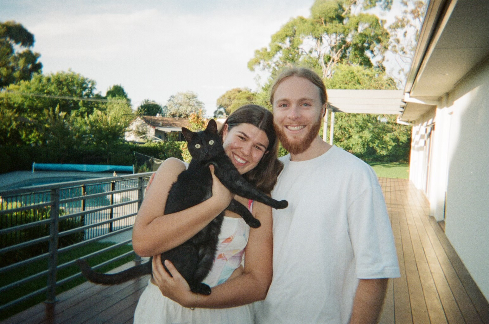

/now.

Inspired by Jamie Tanna's /now page, the purpose of this page is to share what things I am currently up to. As someone I read once said, the idea is to include those things you would tell a friend when catching up after not seeing them for a year. As far as I can tell, this idea stems originally from Derek Siver's post, 'The /now page movement'.
What am I up to right now?
- Living with my partner Emily in our quaint inner-city apartment.
- Currently working in my first programming role as an software engineer with The Department of Finance where my team and I maintain the Australian Government's flagship open-source web content management system GovCMS.
- Studying a Master of Computing at the Australian National University to help satisfy my thirst for knowledge. Unfortunatley, this tends to make the problem worse because as Einstein (supposedly) said, the more I learn, the more I realise I don't know.
- Eagerly improving my engineering skills wherever possible, including currently working on a small C++ project to improve my proficiency with this language as it remains in demand in my local area.
What are my interests
- Competitive tennis, I play many times each week and try to compete as much as possible in local leagues and tournaments.
- Chess, one of my goals for 2024 is to reach a rapid elo rating of 2000 chess.com. My account is here if you would like to send me a challenge!
- I like many first-person shooters, but true love will always be Counter-strike. I enjoy playing with my friends whenever time permits and attending pro events when they happen to be in Sydeny.
- Software testing and test-driven development in particular. Theres something about seeing those green ticks that gets the dopamine flowing.
What am I looking for right now?
- Mentors! I am keen to pick the brains of any individuals experienced in the IT industry, so if that's something you would be open to, reach out!